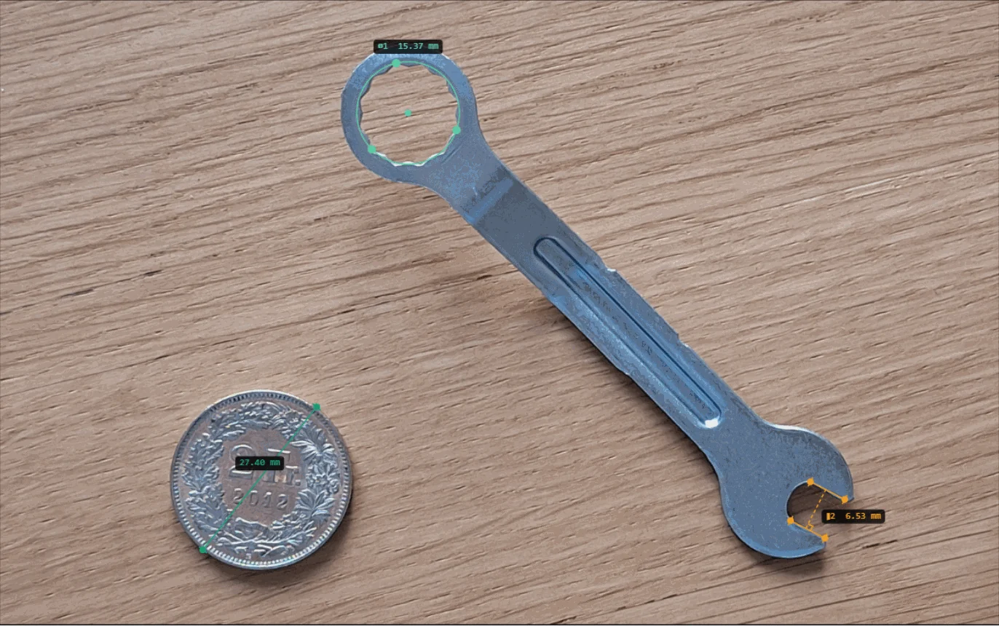

Home/Use cases/Photo measurement
Measure from a known object in a photo
Use Mesuro when a photo contains a reliable reference object: set scale from a coin, ruler, or known part, then measure nearby objects in real units without leaving the browser.

How it works
Load the photo
Open an image containing both the item and a reference object with a known size.
Set scale from the reference
Measure the known object first, then enter its real-world dimension.
Measure nearby objects
Check lengths, diameters, areas, or other geometry in calibrated units.
Export the result
Save an annotated image, PDF report, CSV file, or reusable project.
Questions
What can I use as a reference object?
Use any visible object with a known size, such as a coin, ruler segment, gauge block, or another part with a trusted dimension.
Does the reference object need to be near the item?
For best results, keep the reference object in the same plane as the item you want to measure so perspective affects both similarly.
Can I correct perspective before measuring?
Yes. If the photographed surface is skewed, use perspective correction before calibrated measurement when you have a suitable rectangular reference.